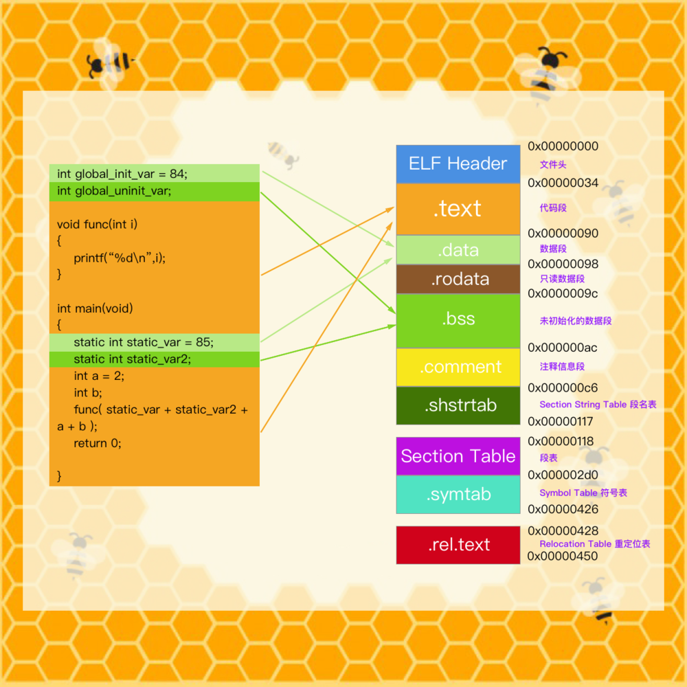

BHAnnotation中的数据存储 当我们想要在项目工程任何地方可以方便的的存储数据 而在其他地方方便的获取数据时，我们可以采用此方法，将数据存在data数据段中，指定数据段中，而在需要时 直接从指定的段中取出
__attribute__((used, section("name"))) char * kShopModule_mod __attribute((used, section("__DATA,""BeehiveMods"" "))) = """ShopModule""";
section的作用: 编译器编译源代码后生成的文件叫目标文件，从文件结构上来说，它已经是编译后可执行的文件格式，只是还没有经过链接的过程。可执行文件(Executable)主要是Windows下的PE(Portable Executable)和Linux的ELF(Executable Linkable Format)，它们也都是COFF(Common file format)格式的变种。程序源程序代码被编译之后会主要分成两个段：程序指令和程序数据。代码段属于程序指令，数据段和.bss段属于数据段。
.data数据段里面保存的都是初始化过的全局静态变量和局部静态变量。.rodata段存放的是只读数据，一般都是const修饰的变量和字符串常量。.bss段存放的是未初始化的全局变量和局部静态变量。代码段就在.text段。 此时我们就指定数据存储在data数据段的sectionName的段中 
constructor函数、dyld加载 在程序加载执行是，即main()函数执行之前，其实发生很多事情，就会有一系列方法执行 dyld即是在程序加载之前执行
__attribute__((constructor)) void initProphet() { _dyld_register_func_for_add_image(dyld_callback); }
程序加载时间记录分析 类似BHTimeProfiler
BHTimeProfiler
我们在日常开发中应该有类似的工具 帮助我们查看需要的执行时间
« Prev Page
iOS 开发模块知识 Swift初学笔记 计算机编程 iOSDevelop JavaScript学习笔记 React-Native Python
Copyright © 2015 Powered by MWeb, Theme used GitHub CSS.